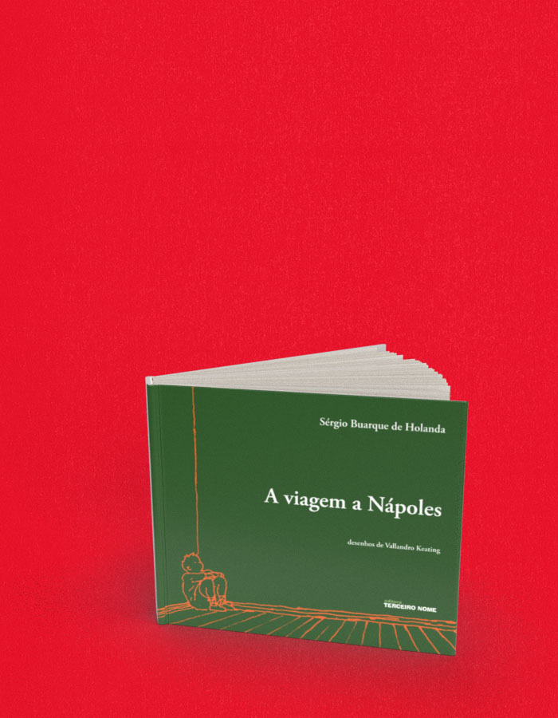

A viagem a Nápoles
A compra acontece no site da livraria, em uma nova aba. Consulte lá os preços e a disponibilidade. Procure pelo título ou ISBN deste livro.
- Autoria / créditos
- Sérgio Buarque de Holanda
- ISBN
- 9788578160326
- Páginas
- 80
- Formato
- 19,5 x 16 cm
- Acabamento
- brochura
Sobre o livro
Um conto surrealista: em sua única obra de ficção, Sérgio Buarque de Holanda mergulha na fantasiosa cabeça de um jovem, criando situações absurdas e nada convencionais. O conto foi publicado originalmente em 1931, pela Revista Nova .
Frequentador de rodas de conversas entre modernistas, literato de carteirinha e dono de enorme bagagem cultural, Sérgio Buarque de Holanda era ainda bem jovem quando começou a escrever para revistas e jornais. Em 1936, aos 34 anos, publicou sua primeira e mais famosa obra, Raízes do Brasil . A partir de então escreveu vários livros que o consagraram como um dos maiores pensadores brasileiros, entre os quais Visão do paraíso , considerado um dos textos mais significativos e eruditos da historiografia brasileira. A viagem a Nápoles é sua única obra de ficção.
Vallandro Keationg é arquiteto, e entre seus principais trabalhos estão os murais feitos a convite de Oscar Niemeyer para o Tribunal Superior de Justiça, em Brasília, para o Memorial da América Latina e para o novo auditório do Parque do Ibirapuera, ambos em São Paulo. Além disso, é autor de livros como A bordo do Rui Barbosa , em parceria com Chico Buarque e É gol , com Ignácio de Loyola Brandão. Para a Terceiro Nome, Vallandro ilustrou com muitos desenhos os livros Caminhos da conquista , a formação do estado brasileiro e Diário de navegação, Pero Lopes e a expedição de Martim Afonso de Sousa (1930-1932).
← Voltar ao catálogo